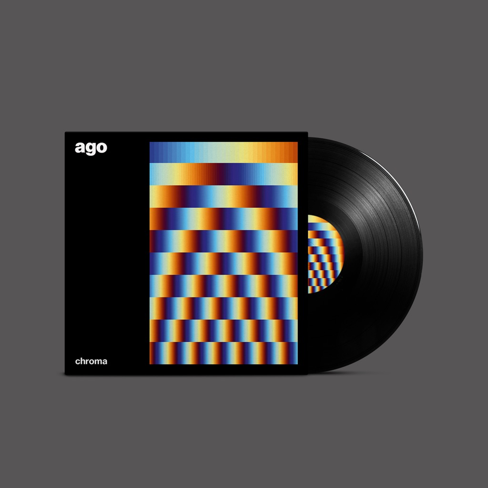

Niklas Thran
Catalog
@
Etüde zur algorithmischen Wiederholung und Iteration
Etude on Algortihmic Repetition and Iteration
2021-07
Zwei algorithmische Kompositionen, die sich grundlegend mit Wiederholung und Iteration befassen. Sie können verändert und skaliert werden.
Two algorithmic compositions, fundamentally exploring repetition and iteration, both able to be changed and scaled.
Maßgefertigte Software
Custom software
https://ago-band.info/music/
https://ago-band.bandcamp.com
Henrike Uthe, Hilka Dirks, Tessa Meyer (2019). Basics Blog Post. Berlin: Verlag der Universität der Künste. ISBN 978-3-89462-321-0.
Ago (2021). Chroma (Artwork). Stuttgart.
